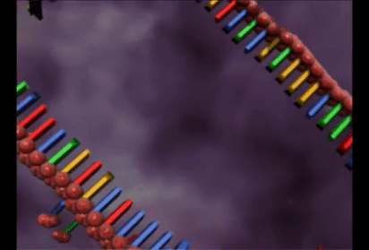
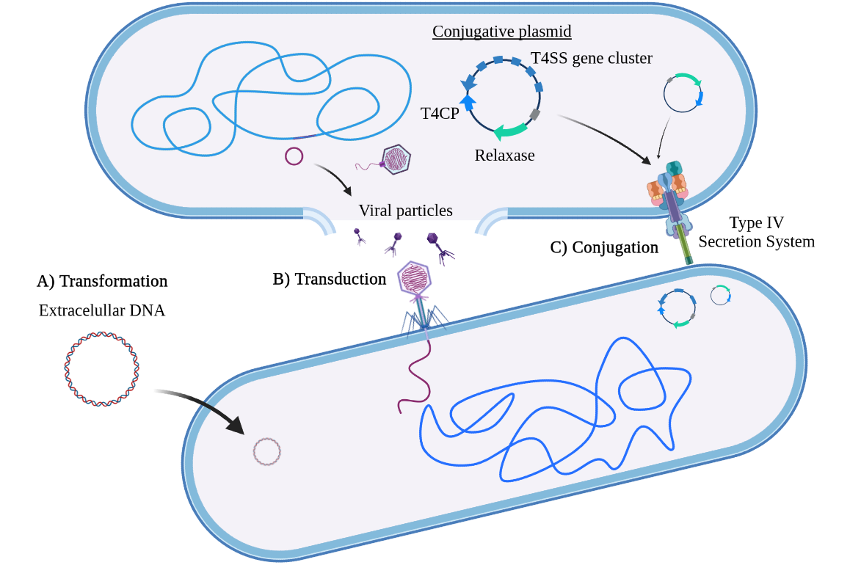

Mobile Genetic Elements
Mobile genetic elements
This brief section belongs to the Introduction of the Master’s Thesis from one of our students, Víctor Mateo-Cáceres (UAM, June 2022).

Over the course of evolution, genetic material has found diverse ways of mobilization beyond vertical inheritance. A whole spectrum of vehicles, ranging from plasmids to phages, is used by all bacterial species for the horizontal transference of DNA between cells [@frost2005, @partridge2018]. These wandering DNA sequences, referred to as Mobile Genetic Elements (MGE), can encode virulence determinants, antimicrobial resistance (AMR) genes, phage defense systems, and other factors that grant their hosts new phenotypic traits [@khosts'2020] . MGE transference is especially relevant in prokaryotes, where specific DNA mobilization systems have been developed to enhance and optimize the acquisition of these elements [@frost2005]. In fact, obtaining advantageous features through MGE transference is the main form of short-term adaptation in bacteria and can become crucial for cell survival, as in the case of AMR genes. The concerning increase of multidrug-resistant (MDR) bacteria is a clear example of this last point [@magiorakos2012]. Therefore, it is essential to discover and characterize new mechanisms of genetic transference in order to disclose which features allow certain bacterial strains to succeed over the rest, especially the pathogenic ones.
Horizontal genetic exchange mechanisms can be classified into three main groups according to the DNA introduction pathway: transformation, transduction, and conjugation (Figure 1). Transformation is the direct uptake of genetic material from the extracellular medium, which is frequently inefficient and can require activating the competence state [@carvalho2020, @firth2018]. Transduction refers to the transport of foreign DNA by viral particles [@humphrey2021]. Conjugation, which has been extensively studied in plasmids, involves the transference of DNA from a donor cell to a recipient cell through the Type IV Secretion System (T4SS) [@smillie2010].

Conjugative plasmids typically carry all genes necessary for T4SS configuration plus a T4SS coupling protein (T4CP), which is involved in the T4SS-DNA interaction, and a relaxase, which is a nickase necessary for generating the single-stranded DNA (ssDNA) that will be transferred. In fact, relaxases can be divided into several families according to their sequence and have been proposed as markers for plasmid classification [@smillie2010; @garcillan-barcia2009]. Nevertheless, we currently know conjugative plasmids that lack some of the conjugation modules and conjugative plasmids with the capacity of integrating into the genome, also called Integrative and Conjugative Elements (ICEs) [@botelho2021], remarking the high flexibility of this type of MGEs.
Self-replicative MGEs… or not?
We are particularly interested in elements encoding enzymes related to DNA replication and repair. Thus, the discovery, some time ago, of a group of MGEs called Polintons @kapitonov2006, as they encode their own B-family DNA polymerase. Later, another MGEs group also resulted to contain a PolB, the Casposons @krupovic2014. This led some authors to define a group of elements that might be self-replicative elements @krupovic2016. However, the role of those PolBs is still unknown.
Pipolins, our model MGE
Apart from phages, plasmids, ICEs, and other MGEs that have been in the spotlight for the last years, such as integrons or CRISPR-Cas Associated Transposons (CASTs), one group recently discovered stands out for its large genetic diversity and variability: pipolins. This new superfamily of MGEs comprises elements found in the three major bacterial phyla and even mitochondria @redrejo-rodríguez2017. The only gene shared by all pipolins encodes for a replicative DNA polymerase from the family B (PolB), granting these elements the category of the so-called “self-replicating” elements along with the abovementioned Polintons and Casposons. However, PolBs from pipolins do not need a DNA/RNA 3’-end or a protein as a primer to initiate the complementary strand synthesis, making pipolins a unique class of elements inside the MGE universe. Furthermore, the biochemical characterization of this polymerase named piPolB (from primer-independent) has shown that it has capacity of proofreading, strand displacement, and replication over both undamaged and damaged templates. All of these features plus the de-novo DNA synthesis suggest a possible role for the piPolB in pipolin replication and/or cell DNA damage tolerance. However, we could generate a E. coli strain harboring pipolin but lacking the piPolB, which indicates that piPolB is not essential for pipolin maintenance. This result raised questions about the biological role of piPolB, but also about the “self-replicating” GME. Are they replicating at all?
Later on, we could characterize the pipolins in pathogenic E. coli strains, showing that they are highly flexible and diverse, with the piPolB and the integration site being the only features in common to all elements @flament-simon2020. We described this work also in this post in Nature Microbiology Community site.

E. coli pipolins appear as integrated elements next to a specific tRNA gene, delimited by two direct repetitions (DRs) similar to phage atts, and encode for several distinct functions other than the piPolB. Among these different functions, we often find: tyrosine-recombinases (Y-rec), probably responsible for the excision and integration of the element; restriction-modification (RM) enzymes, known as defense systems against foreign DNA; and many other genes related to DNA mobilization and metabolism (integrases, Uracil-DNA glycosylases, excisionases). Surprisingly, no antimicrobial resistance gene was found in any pipolin except very few cases.
ExplorePipolin
The recent accessibility of high-throughput sequencing methods as part of surveillance programs of bacterial pathogens allows the genomic and metagenomic monitoring of the expansion of bacterial strain-specific markers, including virulence and AMR genes. However, these fast-evolving methods also generated a burden of data that must be throughout processed and analyzed @mitchell2019. This is particularly problematic regarding the study of dynamics and plasticity of MGEs, as they can range in size from very simple and small elements, such as insertion elements (IS), coding for only the transposase necessary for their relocation, to large prophages, transposons and plasmids, which can be tens or hundreds of kilobase pairs in length and also appear associated among themselves @partridge2018 @durrant2020 @benler2021. Further, MGEs prediction and analysis are hindered by their great modularity and rapid evolution through gene acquisition and gene loss. Many pipelines designed for the analysis of MGEs are specialized and rely on the identification of hallmark genes, like plasmid replication proteins @carattoli2020, relaxases @alvarado2012 or specific transposase or recombinases for integrative elements @ross2021 @siguier2012 @moura2009 @cury2017 @cury2016. Some works have focused on the use of selected, high-quality reference genomes, but at the cost of diversity loss @jiang2019.
In order to facilitate the characterization of pipolins, we developed ExplorePipolin, a Python-based pipeline that screens for the presence of the element and performs its reconstruction and annotation. The pipeline can be used on virtually any genome from diverse organisms and of diverse quality, obtaining the highest-scored possible structure and reconstructed out of different contigs if necessary. Then, predicted pipolin boundaries and pipolin encoded genes are subsequently annotated using a custom database, returning the standard file formats suitable for comparative genomics of this mobile element.